Ceci est un résumé de quelques activités professionnelles de cette fin d’année 2019 pour mes proches,
famille ou ami, qui se demandent bien en quoi consiste mon travail à part passer la moitié de mon temps en déplacement loin d’Annecy.
En fait, la partie la plus importante de mon activité depuis 3 ans, c’est de participer à la construction de ça :
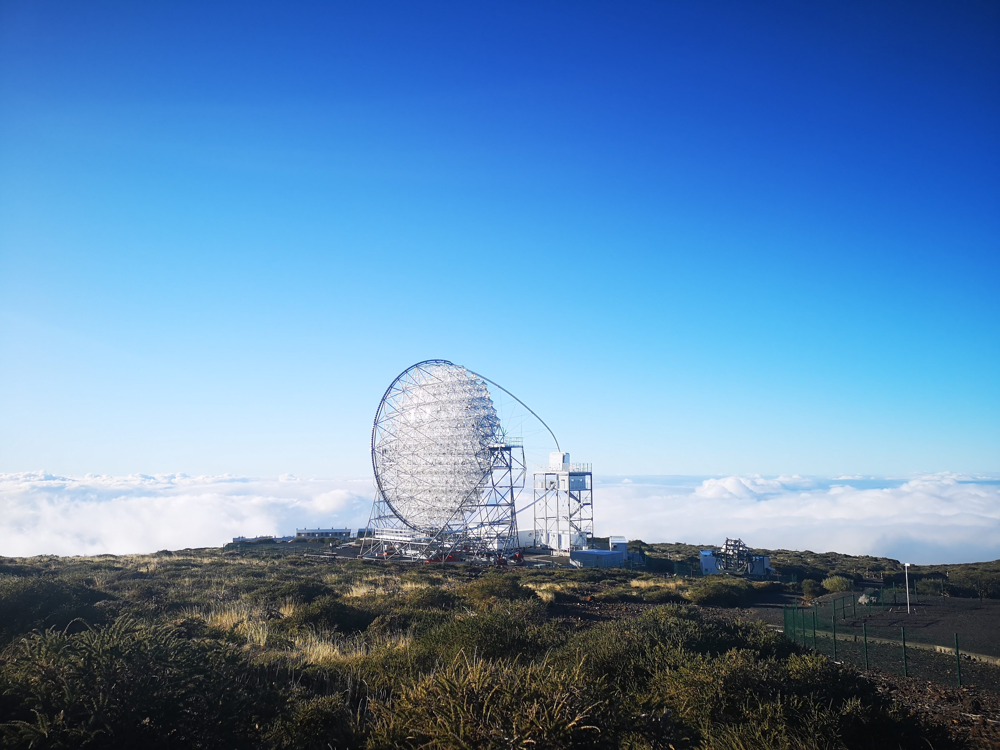
Le premier, appelé LST1 (Large Size Telescope 1), et plus grand télescope du réseau CTA (pour Cherenkov Telecope Array) qui doit être construit en partie au Chili et en partie à La Palma
(îles Canaries, Espagne).
Ce réseau de télescopes a pour vocation d’observer la lumière la plus énergétique de l’Univers, appelée rayons gammas, produite principalement par des évènements dits « violents »
- pour les curieux, nous pourrons citer les explosions de supernovaes, gamma ray bursts, pulsars, noyaux actifs de galaxie (ca doit vaguement évoquer quelque chose à ceux présent à ma soutenance),
fusions d’étoiles à neutrons…
Pourquoi le Chili ou La Palma me demanderont certains. Tout d’abord, construire à la fois dans l’hémisphère sud et dans l’hémisphère nord nous permet ainsi de couvrir
la quasi-totalité du ciel. Ensuite viennent un ensemble de considérations, à la fois scientifique (qualité du ciel, météo permettant de maximiser le temps d’observation, altitude…),
politique (pays partenaires et stables), économiques et organisationnelles (lieux accueillants déjà de grands observatoires et disposant donc des infrastructures annexes nécessaires – routes,
lignes internet haut débit, eau courante… ). Comme vous pouvez le constater, à La Palma sur El Roqeu de Los Muchachos, nous ne sommes pas seuls :
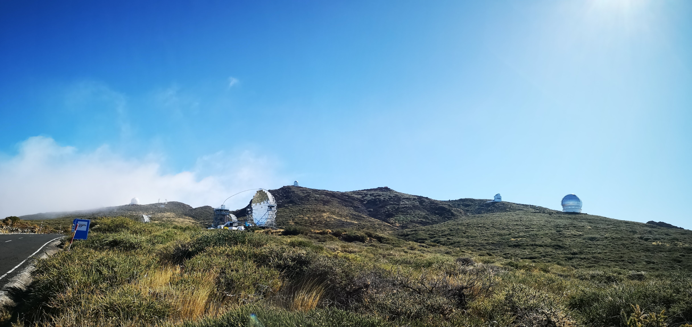
On peut apercevoir de droite à gauche, le Gran Telescopio Canarias, le Telescopio Nazionale Galileo, le Nordic Opitcal Telescope, le LST1, les télescopes de MAGIC,
le télescope solaire Sueco et le télescope William Herschell.
Tandis que mes collègues ingénieurs d’Annecy ont ardemment travaillé à la conception et montage de l’arche ainsi qu’au système de contrôle du déplacement de ce monstre
de 400 tonnes capable de re-pointer n’importe quel point du ciel en moins de 30s - ce qui leur a valu une médaille de cristal collective du CNRS cette année
– je m’échine à concevoir la chaine d’analyse qui permettra d’extraire de la valeur scientifique aux données récoltées.
En Novembre, j’ai eu la chance de pouvoir me rendre deux semaines sur place pour réaliser ce que l’on appelle un « shift »
- c’est-à-dire une période dédiée à l’utilisation et à la prise de données avec un instrument scientifique. J’ai d’autant eu plus de chance de que cette période de shift
correspondait à la période choisie pour réaliser la toute première observation du ciel avec ce télescope dont la construction a été achevé cette année et qui est depuis en phase de test et de calibration.
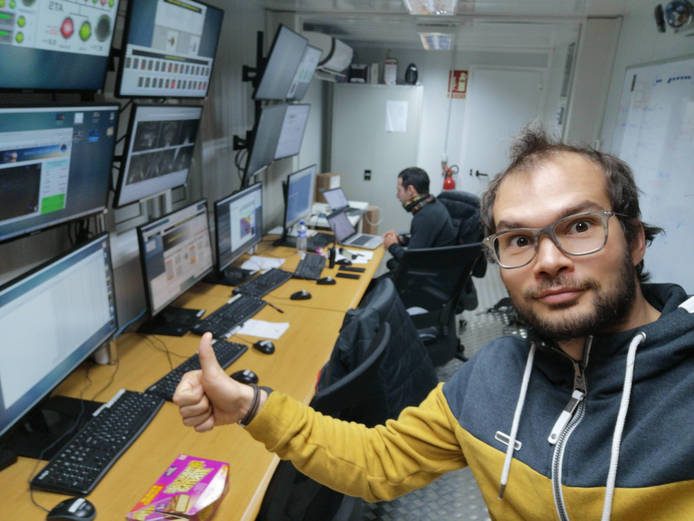
Quelques éléments du télescope :
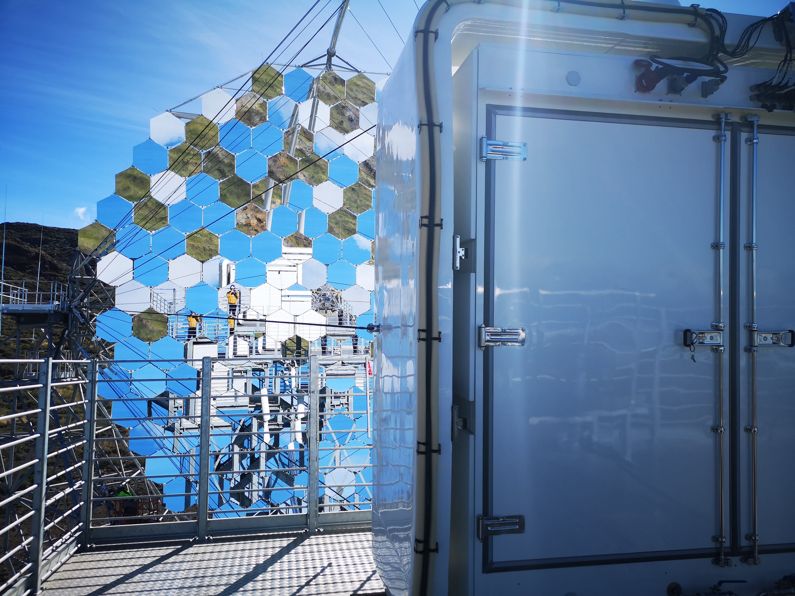
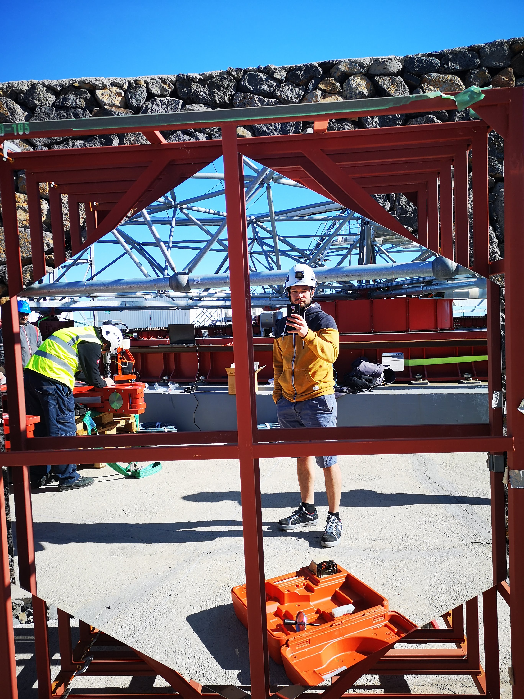
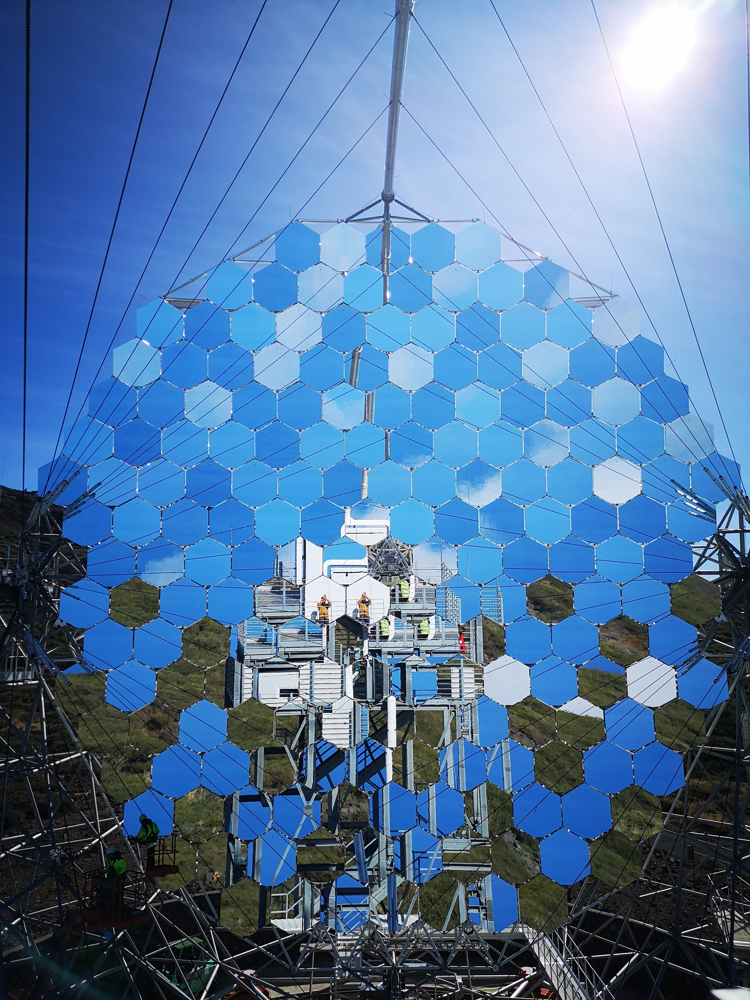
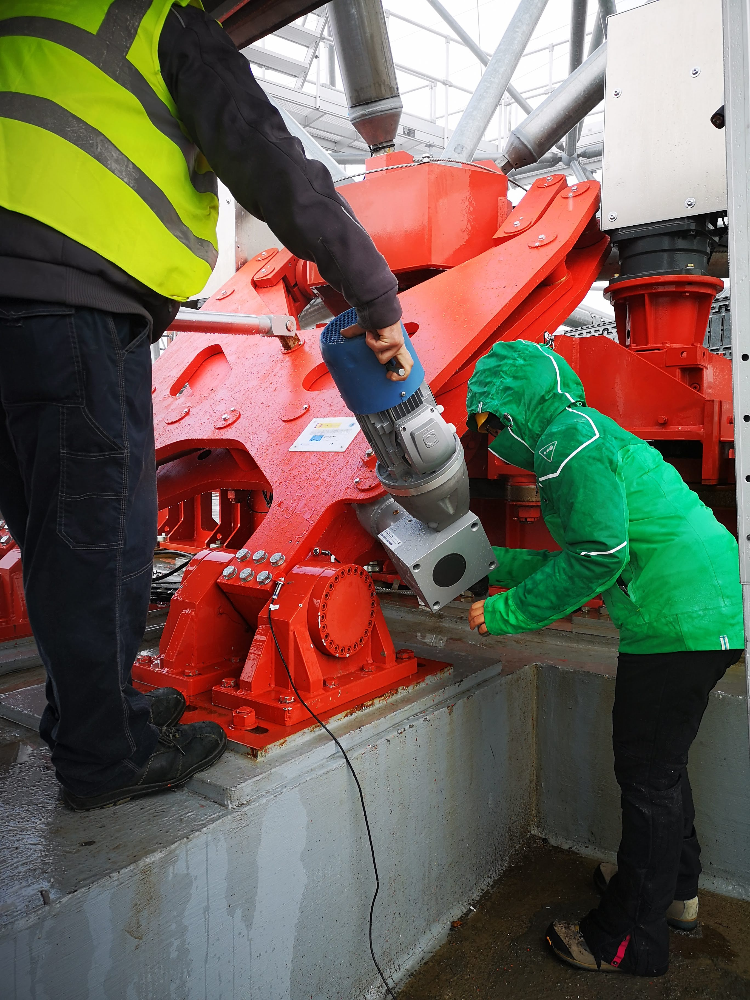
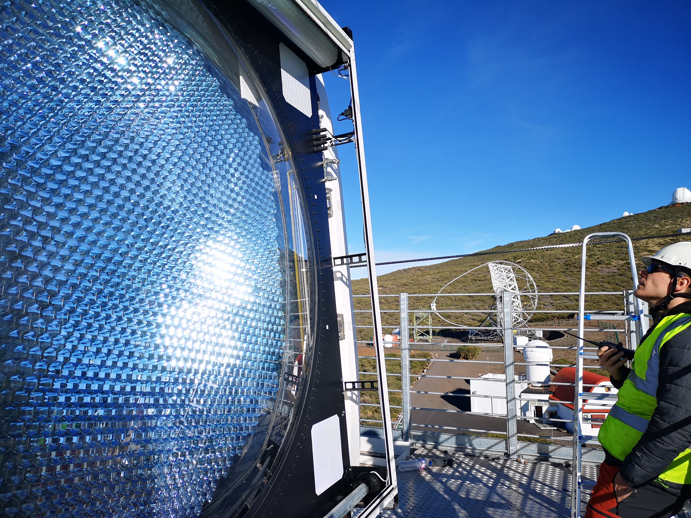
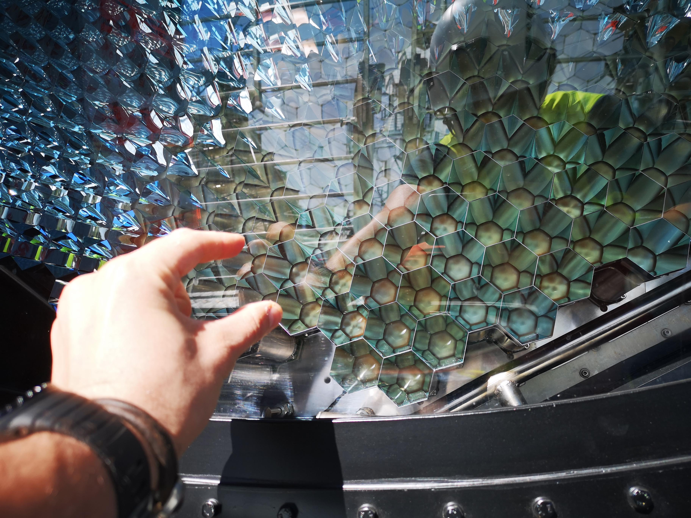
Le LST1 est encore en phase de test et de calibration avant d’entrer en phase d’exploitation scientifique,
puis d’être pleinement intégré dans le réseau CTA (quand ses frères auront été construits).
La quasi-totalité des opérations en shift consiste donc encore à réaliser des tests utiles aux experts de chaque sous-système afin
de s’assurer de leur bon fonctionnement et intégration dans le système complet que représente le télescope. Mais chanceux que je suis,
pendant mon shift, nous avons eu la chance de réaliser les toutes premières observations du ciel pour tester la bonne acquisition et ensuite le bon traitement des données, ceci afin de confirmer que :
- Nous en sommes capable
- Tous les sous-systèmes nécessaires à une telle prise de données fonctionnent correctement
- Nous obtenons des résultats conforment à nos attentes
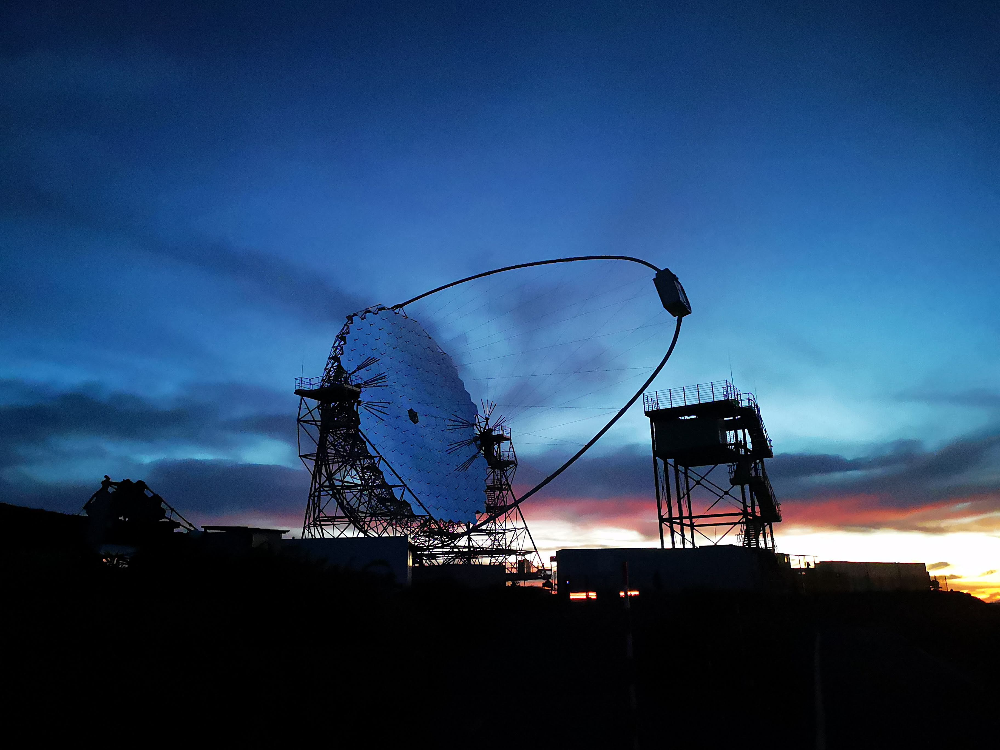
Cette première observation s’est portée sur un objet bien connu des astronomes : la nébuleuse du Crabe.
Ce magnifique reste de supernovae est observable à toutes les longueurs d’ondes, de la radio aux rayons gammas (en passant par l’infra-rouge, l’optique, les ultra-violets, les rayons-X… )
et forme de magnifiques images, notamment en optique :
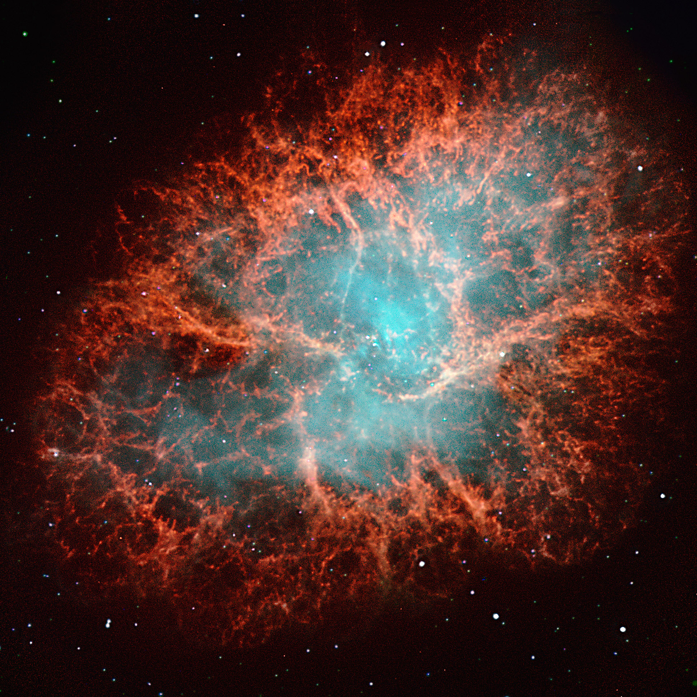
Ce que nous voyons là est le gaz expulsé lors de la formidable explosion d’une étoile en fin de vie. Ce gaz (les filaments rouges) est illuminé
par les radiations issues de l’explosion et du reste du cœur de l’étoile encore brulant en son centre.
Si j’illustre cette nébuleuse avec une image en optique c’est parce qu’à très hautes énergies, nous ne possédons pas la résolution angulaire
pour obtenir une image résolue. Nous ne voyons qu’un point lumineux, semblable à une étoile. Cet objet est très bien connu et très lumineux,
il nous sert donc de chandelle de référence pour beaucoup de mesures tests – comme ce fut le cas ici.
Quelques heures d’observations et une analyse de données, réalisée en partie par votre serviteur, ont suffi pour obtenir un signal très clair en provenance du Crabe.
Ce que nous obtenons après analyse, bien moins impressionnant que l’image du NOT, ça ressemble à ca :
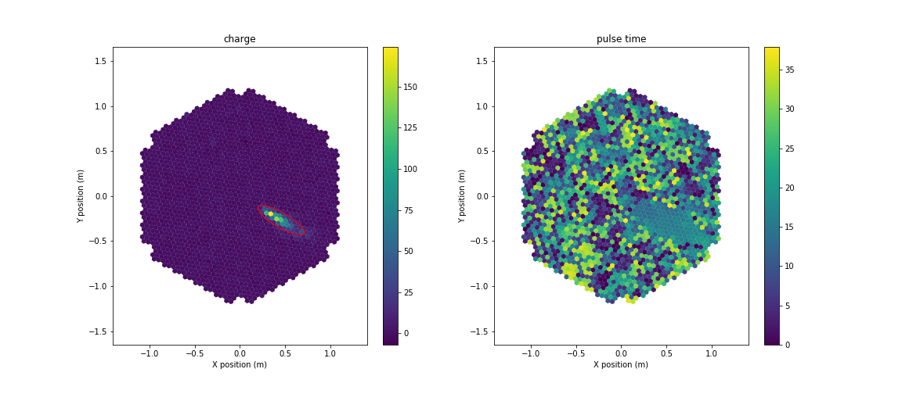

Ajouter des détails sur l'analyse de données et le fonctionnement du télescope .
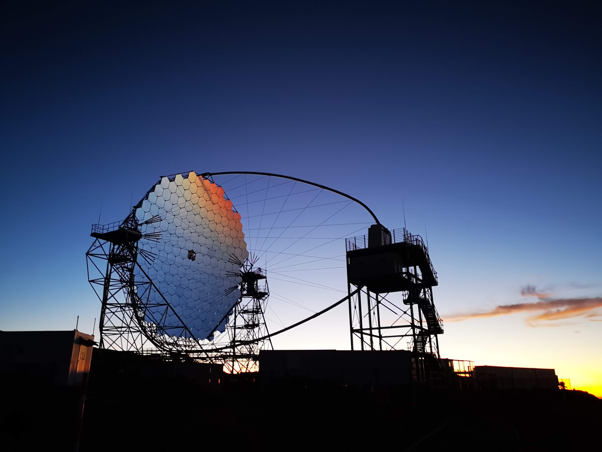
High energy observations are particularly interesting in my work and can be done by different telescopes: satellites observing in X-rays (XMM) and gamma rays (Fermi) or ground based telescopes, such as Cherenkov telescopes (HESS, CTA)

Picture of the galaxy NGC 4261 from Hubble archives.
On the left, a composit image of the galaxy NGC4261. Both jets coming from the central core are visible in radio. On the right, a zoom on the central core by the Hubble Space Telescope where we can see the accretion disk and the dusty torus.

Scheme of the central region extracted from Trevor C. Weekes, Very High Energy Gamma-Ray Astronomy
A lot of material (mainly gas and dust) gravitates around the central black-hole. The jet emanates from the central regions of the AGN, either from the ergosphere of the BH or from the accretion disc.